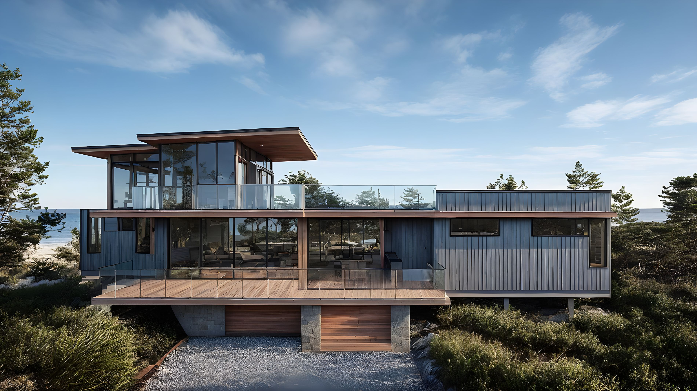

Project Details
A lookout over the north shore dunes that is light on the land.
Tisbury is sited at the edge of a coastal forest, positioned above the forest canopy to capture sweeping views of the dunes and ocean beyond. Outdoor living spaces occupy the upper levels, where light, air, and landscape converge.
The design emphasizes minimal environmental impact — a reduced foundation footprint, passive solar orientation, and biogenic building materials that will weather in harmony with the coastal setting. The building presents as a unified form, with continuous siding interrupted only by vertical window bands that frame carefully considered views.
The project is currently progressing from schematic design through construction documentation.


